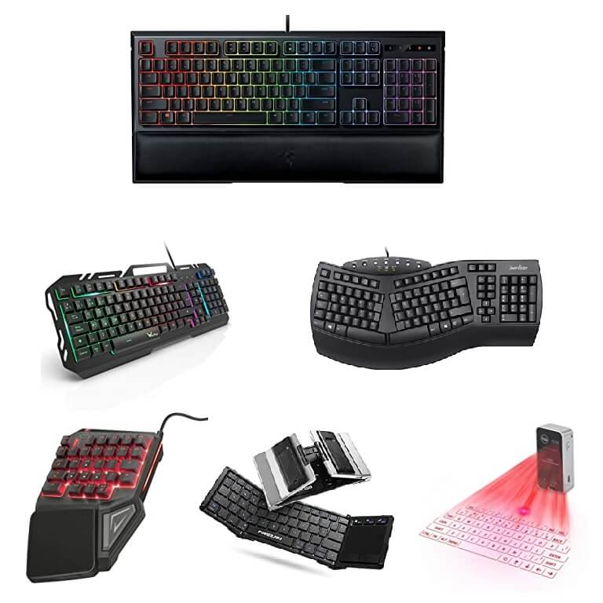
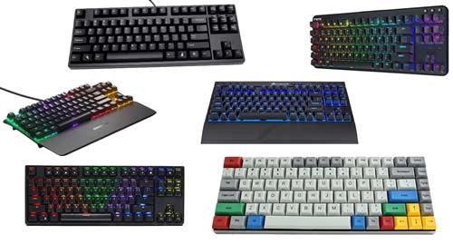

KEYBOARDS STORE
|  |  |
 |
What is the keyboard?
In computer science and computing, the keyboard is a peripheral or input or input device (input) of information.
It consists of a set of keys or buttons arranged horizontally on a sheet, where they act as mechanical levers or
electronic switches, thus allowing the user to enter encrypted information into the computer system.
It operates in a similar way to typewriters: each key is associated with a character, a function or a set of
characters, which, when pressed by the user's fingers, enter a specific signal to the computer, tablet or Smartphone.
The keyboard is probably the main way the user communicates with the computer system. It was also the first to
be devised, at least as far as modern computers are concerned.
Today there are different computer keyboard configurations and different models, depending on their ergonomic
construction and internal logic. Some of them have even incorporated the functions of other peripherals, such as
the mouse: not only do they come in different languages, but they are also adapted to the Operating Systems and
computer models that exist on the market.